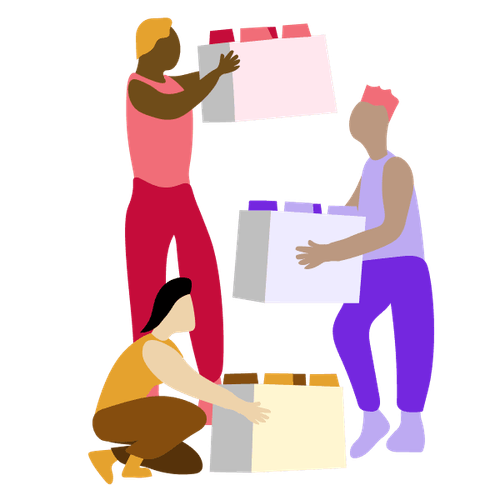

Mit der Academy erhaltet ihr im Business-Plan praxisnahe Lernmodule rund um Facilitation und wirksame Transformation.
Gemeinsam mit 9 Spaces zeigt Plan International Deutschland, wie wertebasiertes Arbeiten Orientierung gibt – nach innen wie nach außen.

Dieser Workshop bringt euch von komplexen Fragen zu konkreten Lösungsideen – durch Perspektivwechsel, kreatives Denken und kollaboratives Prototyping.
Bei dieser Variante des Daily Stand-ups macht ihr im Team euren jeweiligen aktuellen Arbeitsstand transparent und gebt euch gegenseitig Impulse für die nächsten Schritte.
Ein Umfrage-Tool, das euch dabei hilft, euren Strategieprozess zu öffnen und die kollektive Intelligenz aller Team-Mitglieder zu nutzen
Dieses Tool hilft euch dabei, auf spielerische Art eine Vision für ein Projekt zu entwickeln.